PCI Devices Controller
A PCIDevice in SUSE® Virtualization represents a host device with a PCI address.
The devices can be passed through the hypervisor to a VM by creating a PCIDeviceClaim resource, or by using the UI to enable passthrough. Passing a device through the hypervisor means that the VM can directly access the device, and effectively owns the device. A VM can even install its own drivers for that device.
This is accomplished by using the pcidevices-controller add-on.
To use the PCI devices feature, users need to enable the pcidevices-controller add-on first.

Once the pcidevices-controller add-on is deployed successfully, it can take a few minutes for it to scan and the PCIDevice CRDs to become available.
Enabling Passthrough on a PCI Device
-
Now go to the
Advanced → PCI Devicespage: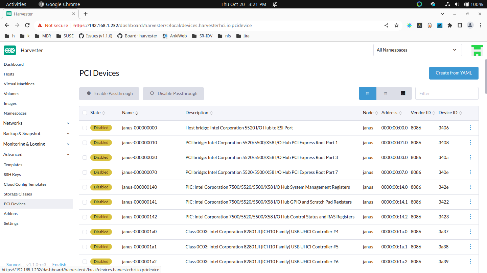 -
Search for your device by vendor name (e.g. NVIDIA, Intel, etc.) or device name.
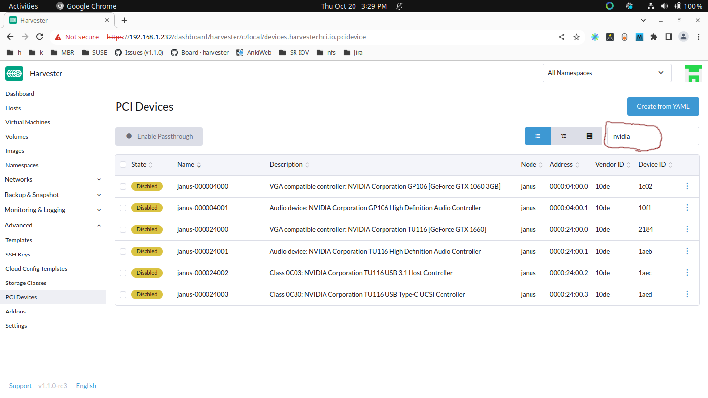 -
Select the devices you want to enable for passthrough:
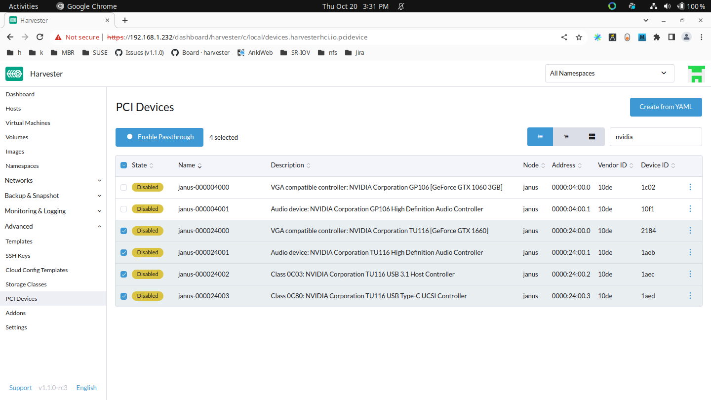 -
Then click Enable Passthrough and read the warning message. If you still want to enable these devices, click Enable and wait for all devices to be
Enabled.Please do not use
host-ownedPCI devices (e.g., management and VLAN NICs). Incorrect device allocation may cause damage to your cluster, including node failure.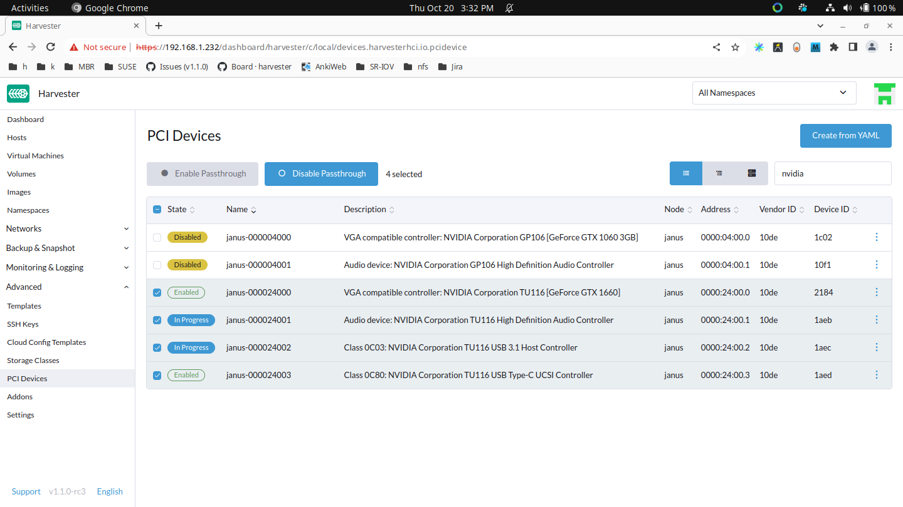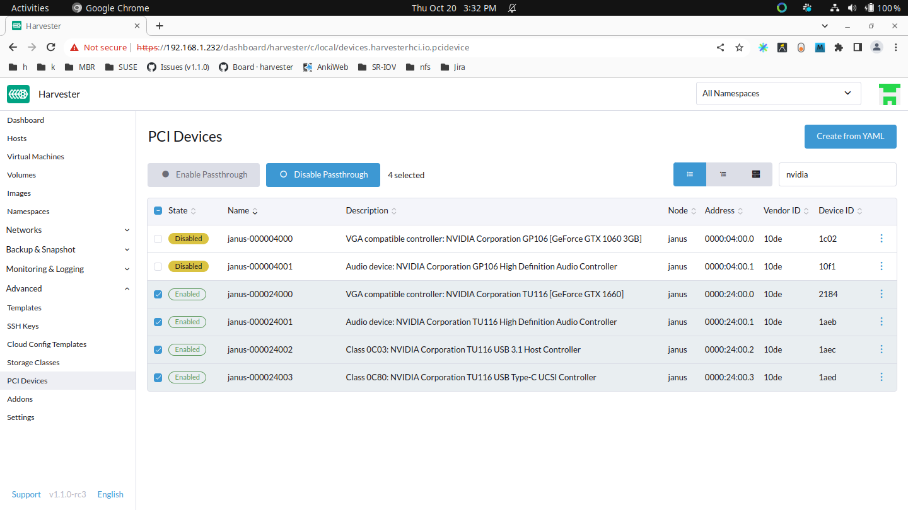
Attaching PCI Devices to a VM
After enabling these PCI devices, you can navigate to the Virtual Machines page and select Edit Config to pass these devices.
Select PCI Devices and use the Available PCI Devices drop-down. Select the devices you want to attach from the list displayed and then click Save.
Using a passed-through PCI Device inside the VM
Boot the VM up, and run lspci inside the VM, the attached PCI devices will show up, although the PCI address in the VM won’t necessarily match the PCI address in the host.
Installing drivers for your PCI device inside the VM
This is just like installing drivers in the host. The PCI passthrough feature will bind the host device to the vfio-pci driver, which gives VMs the ability to use their own drivers. Here is a screenshot of NVIDIA drivers being installed in a VM. It includes a CUDA example that proves that the device drivers work.
Known Issues
-
Issue #6648: A virtual machine can be scheduled on an incorrect node if the cluster has multiple instances of the same PCI device.
The pcidevices-controller add-on currently uses unique resource descriptors to publish devices to the kubelet. If multiple PCIDeviceClaims of the same device type exist within the cluster, the same unique resource descriptor is used for these PCIDeviceClaims, and so the virtual machine may be scheduled on an incorrect node. To ensure that the correct device and node are used, select Run VM on specific node when configuring Node Scheduling settings.
SR-IOV Network Devices
The pcidevices-controller add-on can now scan network interfaces on the underlying hosts and check if they support SRIOV Virtual Functions (VFs). If a valid device is found, pcidevices-controller will generate a new SRIOVNetworkDevice object.
To create VFs on a SriovNetworkDevice, you can click ⋮ → Enable and then define the Number of Virtual Functions.
The pcidevices-controller will define the VFs on the network interface and report the new PCI device status for the newly created VFs.
On the next re-scan, the pcidevices-controller will create the PCIDevices for VFs. This can take up to 1 minute.
You can now navigate to the PCI Devices page to view the new devices.
We have also introduced a new filter to help you filter PCI devices by the underlying network interface.
The newly created PCI device can be passed through to virtual machines like any other PCI device.
USB Devices
A USBDevice resource in Harvester represents a USB device on the node. USB devices can be "passed through" by the hypervisor to allow direct access from VMs. This is accomplished through the pcidevices-controller add-on. To use USB passthrough, you can either create a USBDeviceClaim resource or enable the feature on the Harvester UI.
USB passthrough is slightly different from PCI passthrough. For example, you can fully control a USB controller with four USB ports by creating a PCIDeviceClaim. However, you can also create a USBDeviceClaim to control only one USB port. The other three USB ports remain available to the node.
|
Before you remove the USB device, detach it from the virtual machine and then disable passthrough on the USB Devices screen. |
Enable Passthrough on a USB Device
-
On the Harvester UI, go to Advanced → USB Devices.
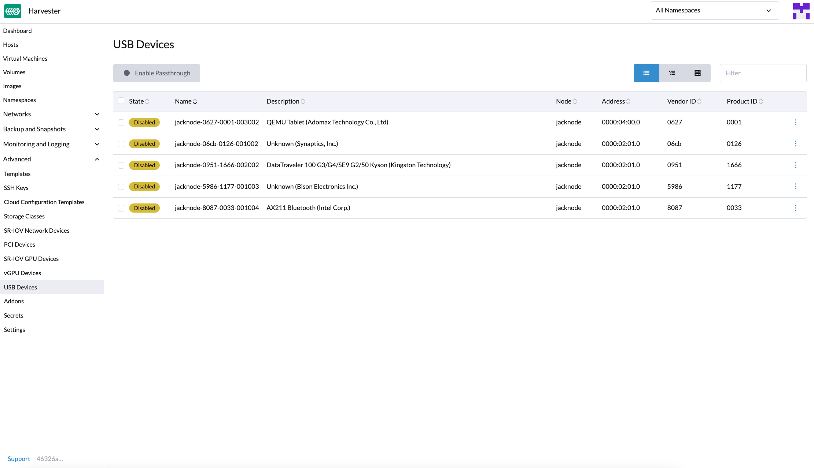 -
Locate the device in the list.
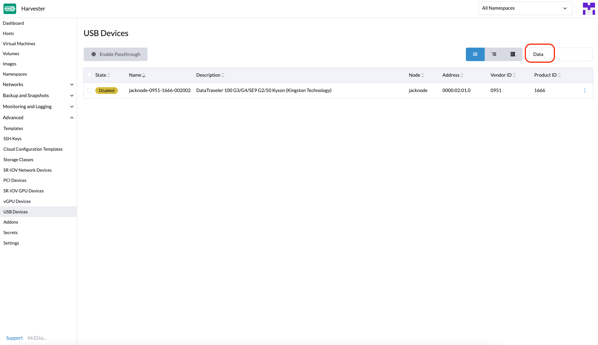 -
Select the target device, and then select ⋮ → Enable Passthrough.
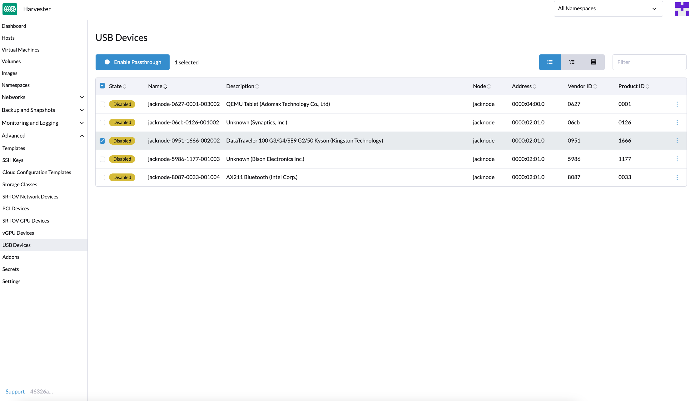 -
Read the confirmation message, and then click Enable.
Allow some time for the device state to change to Enabled.
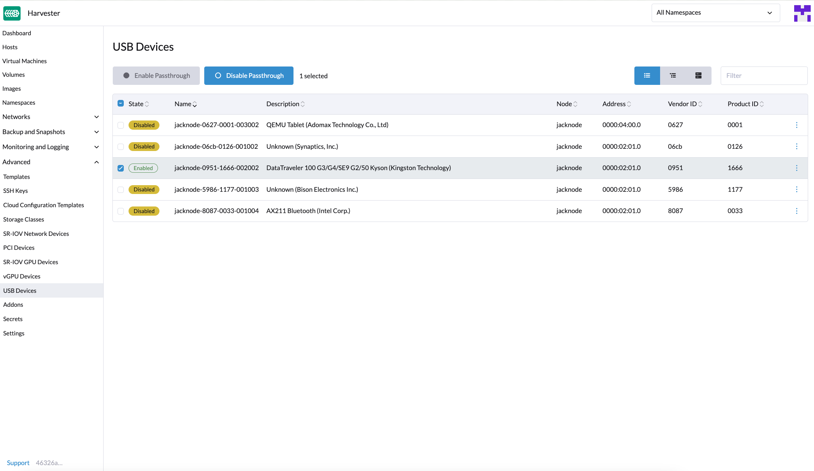
Attach a USB Device to a Virtual Machine
-
Verify that passthrough is enabled on the target device.
-
Go to Virtual Machines, and then create a virtual machine or edit the configuration of an existing virtual machine.
-
On the virtual machine configuration screen, go to the USB Devices tab and then select a device from the Available USB Devices list.
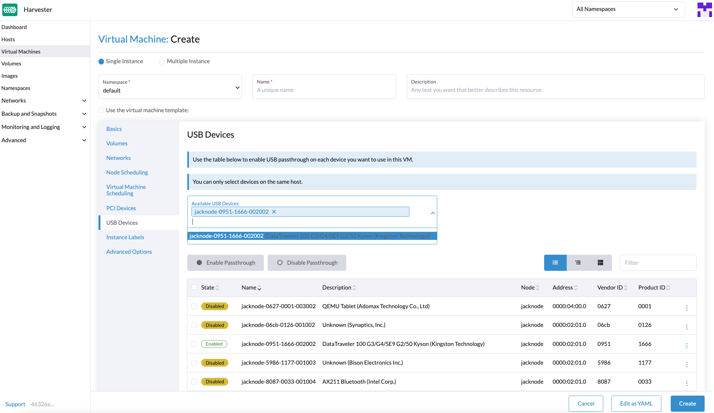 -
Click Create or Save.
View USB Devices Attached to a Virtual Machine
-
Start and then access the virtual machine.
-
Run
lsusb.This utility displays information about USB buses and attached devices.
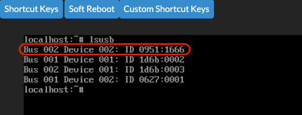
Limitations
-
Virtual machines with attached USB devices cannot be live-migrated because the devices are bound to a specific node.
-
Hot-plugging and replugging of USB devices is not supported. For more information, see KubeVirt Issue #11979.
-
If the device path changes when you reattach the device or reboot the node, you must detach the device from the virtual machine and then enable passthrough again.